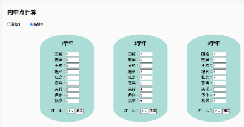

広島県公立高校入試の評価項目の1つである内申点を計算するためのWebサイト．
高校偏差値ランキングも掲載しているため，自分のレベルも簡単に確認できる．
※広島県公立高校入試の評価方法に変更があったため，現在は利用不可．
広島県公立高校入試の評価項目の1つである内申点を計算するためのWebサイト．
高校偏差値ランキングも掲載しているため，自分のレベルも簡単に確認できる．
※広島県公立高校入試の評価方法に変更があったため，現在は利用不可．
1~3年の成績を入力して各学年の内申点の推移と総合内申点を表示する．
「選抜1」と「選抜2」の受験方式によって内申点計算方法が異なるため，選択できるようにした．
また，素早く概算を行えるように学年ごとに「オール○」を設定できるようにした．

内申点の計算方法は少し複雑であり，学年ごとの成績を比較してもどの程度変化があったのか分かりづらいため，グラフで表示した．
制作当時はchart.jsなどの存在を知らなかったため，canvasで実装した．
公立高校の偏差値，目安内申点，名前，備考を一覧で表示するとともに，自分の内申点で狙えるレベルの高校が一目で分かるように色付けをした．
（赤色が自分の内申点より少し上の高校，青色が自分の内申点と同じか少し下の高校）
おまけの機能として，英単語テストのリンクを掲載している．
英単語テストはPythonのスクレイピングによってレベル別に作成した．
塾の営業（入会希望者や現生徒の進路やコースに関する面談）のアルバイトをしていたときに，生徒の内申点と高校のレベルとの比較が簡単にできるツールが欲しいと思い，制作に至りました．
特定の地域に特化したサイトは他になかったので，非常に重宝しました．
初めてのWebサイト制作だったので簡単な機能しか実装できませんでしたが，現場での使いやすさ，顧客に見せることを想定した見やすいデザインを意識して制作しました．